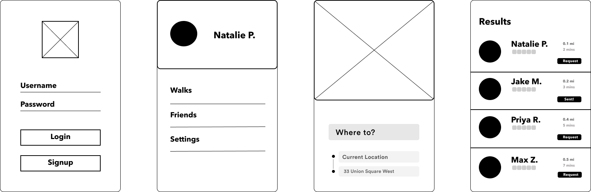
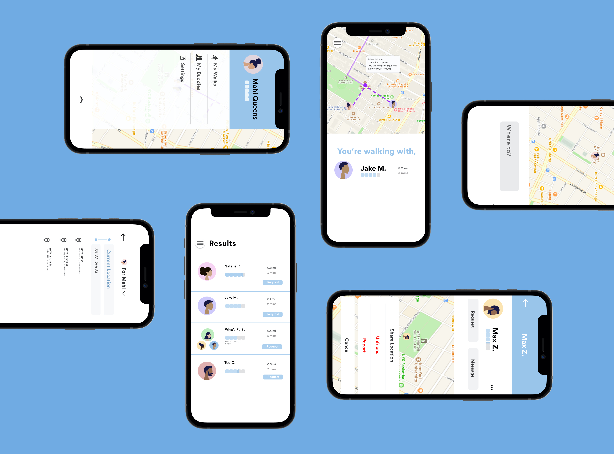

Designing an app service that provides college students with another option of safely getting home at night.
Wander is an app that aims to provide safe walking transportation by connecting college students who have similar destinations with walking buddies. We didn’t design Wander to be a replacement for campus transportation or ridesharing services, but rather, an alternative—with one click, you have access to students minutes away, ready to walk alongside you. Once a student enters their desired destination, Wander uses the student’s current location to curate results based on a combination of current distance from other students, distance between students’ final destinations, and ratings based on past walks.
The main form of transportation for college students is walking since ridesharing is not affordable for all students, public transportation is not available on closed campuses, and campus services are often slow and unreliable; however, many students feel unsafe walking alone at night. We believe that students need more access to options for staying safe at night as incidents of robberies and sexual assault often occur right on campus grounds. From personal experience to the voiced opinions of our peers, there is a clear consensus that there is safety and comfort in numbers. This led us to start brainstorming a solution.
My main focus was working as a UX/UI Designer and Frontend Developer.
Create an accessible transportation alternative for college students while ensuring their safety.
In order to get a better understanding of the opinions our potential users have on this issue as well as what they would like to see from this service, we created a detailed survey asking about their personal experiences when it came to walking at night and the current transportation services available to them. This survey was sent out to students of various universities. The responses gathered provided us with insightful feedback on our proposition and aided us in creating a more formulated framework for our app.
As a team of female New York University students ourselves, this idea stemmed from our personal experiences of having to walk back to our dorms alone at night. As NYU's campus is right within New York City, students are exposed to the many dangers that come with attending college in the city. We have encountered instances of harassment ourselves and often get notified of assaults and robberies on campus through safety alerts, all of which have contributed to the overall feeling of fear annd vulnerability when it comes to walking alone at night. There are times when this cannot be avoided as late night study sessions in the school library or night classes require us to be out and about after dark. As other transportation services are either out of budget or out of the way, and our experiences with NYU's Safe Ride service being negative with long wait times and inefficient routes, walking becomes the only practical and accessible option.
In a survey conducted with 56 college students across the country, 80% of students indicated that they feel unsafe to very unsafe when walking alone on campus at night. This is an even more heightened issue on college campuses in larger cities or hybrid campuses such as NYU.
Limited campus services that do provide security and transportation at night are inefficient, causing long wait times. For example, NYU has Safe Ride, a service that provides shuttle transportation between NYU buildings from 12am - 7am on weekdays. But, 80% of the surveyed NYU students that have used Safe Ride were unsatisfied or very unsatisfied with the service. Safe Ride’s goal is to provide fast transportation via shuttle buses for students, but it falls short of its goal as 63% of students surveyed have had to wait for more than 30 minutes for a ride. 76% of surveyed users who used Safe Ride have booked a ride, canceled it, and ended up walking due to long wait times. This causes user frustration as students want quick and convenient forms of transportation home after long nights of studying.
For other colleges, it was indicated that 78% of the surveyed colleges have a service that provides transportation at night; however, 56% of participants stated that they have never used the service and 35% stated it would have been faster to walk, thus showing that not only is walking the preferred method of transportation on campuses but that the available services do not meet the expectations of students.
College students should not, and with Wander, they do not, have to pay for their safety on campus. Our survey has also confirmed our product-market fit: 96% of students surveyed expressed that they would use a service like Wander on their college campuses.
Our goal was to create an app that is accessible to all students that was not only user friendly, but incorporated enough safety features to keep students safe. We want users to feel more comfortable when having to walk at night by Wander being just a tap away. This walking buddy system would not only be great for security, but also be beneficial in a social aspect as it can be another way students can connect with their peers.
Before beginning the design process, we formulated a basic outline of the framework we wanted to implement. We wanted to have the most basic purposes and functionalities in mind before diving deeper into more complex features that reflected our user research feedback and user safety priorities.
- walking buddy system
- idea of "pathsharing"
- safety in numbers -> walking parties
- alternative, not replacement
- Provide name, email, password
- Form verification
- database needed to store account information
- can't see exact locations
- sort by how close they are
- can see who in their walking party
- send person a request
- can accept or decline
- accept: match and message to meet up
- decline: find another walker
- rate the walker based on criterias
- ie. punctual, talkative, nice, etc.
- gives insight to potential matches
- use API to get current location
- map API could show final destination
- Google Maps SDK?
- storing first name, last initial
- storing x and y coordinates
- stored in 2D arrays
- based on x and y coordinates
- calculate distance in miles and minutes away
- also can sort rank based on their ratings
There are several risks that come with an app like Wander and as safety is of utmost importance, we thought heavily about the various issues that may arise along with potential ways to combat these worries.
The first objective in our design process was to wireframe a few of the main screens of our app. The view that displays the sorted potential walking buddies was the one we wanted to shape the design of Wander around since it is the foundational aspect of the service we are providing.
The three most important details about walkers that we wanted clearly displayed were their name, rating, and proximity. To ensure a level of anonymity, only the first letter of their last name is displayed. Along with that, their distance away is given in miles as their exact location is not shown until they match with another walker.
We then moved onto the other surrounding screens and features basing them off these inital wireframes in order to create a logical flow to our app. As we worked through this process, we refined the look of the screens as well as specifications of how various features worked and interacted with each other. And with that, the MVP for Wander was created.
Click on the screens for a more interactive experience! This prototype shows our intended user flow.
The next steps we would like to take is fully building the app! This we realize will be a big challenge as we are working with limited resources. Building such an app requires cloud database storage, access to APIs, user information security, etc. The physical MVP would allow for A/B and beta user testing which would help further refine development. Our go-to-market strategy would include pitching Wander to public safety teams and partnering with universities to enforce the safety of our users.